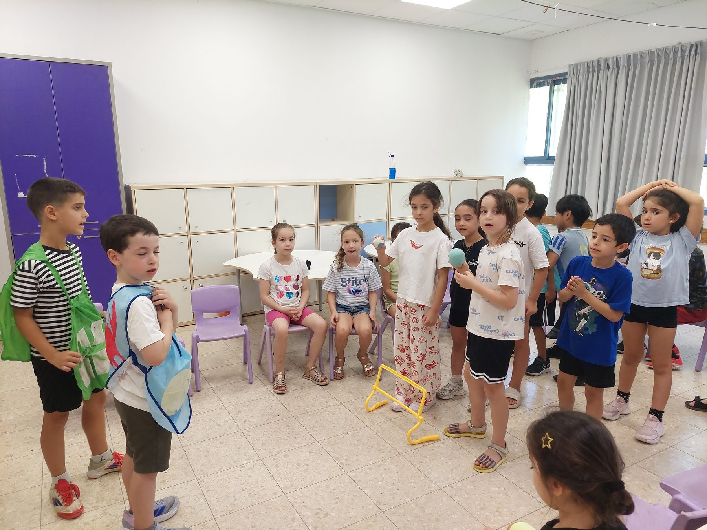

שחר חוויות חינוכיות (לשעבר מעשיותיאטרון) היא חברה המפיקה חוגים, סדנאות, הפעלות והצגות תיאטרון איכותיות לילדים — מאז 1989.
התיאטרון נוסד על ידי עדנה גלבוע, בוגרת בימוי ומשחק מאוניברסיטת תל אביב ו-M.A בכתיבה ספרותית מאוניברסיטת באר שבע, בשיתוף עם השחקנית בת שבע מארק והאמנית דבורה פלדמן — האחראית על הבובות, התלבושות והתפאורות.
לאורך השנים נוצר קשר מיוחד עם הסופרת שלומית כהן אסיף, והתיאטרון מורשה מטעמה להציג חלק מסיפוריה האהובים.
היום, תחת השם שחר חוויות חינוכיות בע״מ, אנחנו ממשיכים את המסורת הזו — עם צוות שחקנים ומוזיקאים מנוסים, המביאים את אותה איכות אמנותית לגנים, לבתי ספר, לאירועים פרטיים ולקייטנות ברחבי הארץ.

שחקן, זמר, בובנאי, גיטריסט ומתופף — מנהל שחר חוויות חינוכיות בע״מ ומעשיותיאטרון, ומפעיל חוגים וסדנאות בבתי ספר ובגנים במסגרת משרד החינוך, תוכנית ניצנים, תל״ן, מתנס״ים, ספריות ובתי ספר של החופש הגדול.
סופרת, מחזאית ושחקנית, בעלת ניסיון של מעל 15 שנה ביצירת תוכן לעולם הילדים.
לצד ינון, פועל צוות מדריכים ומדריכות — שחקנים ומוזיקאים מקצועיים עם ניסיון רב-שנתי בעבודה עם ילדים מכל הגילאים.
מנהל אמנותי, שחקן ומוזיקאי
מנהלת מעשיותיאטרון · סופרת, מחזאית ושחקנית
נשמח לספר לכם עוד על הצוות, השירותים והדרך שלנו — קבעו שיחה קצרה.